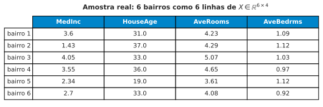
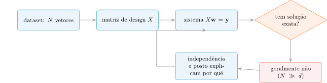
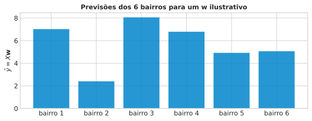
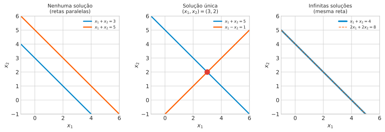
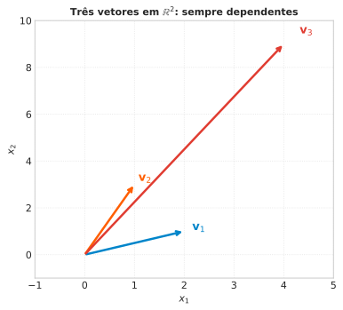
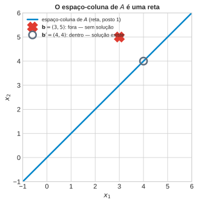

Aula 2: Representações Matriciais, Sistemas Lineares e Independência
Álgebra Linear e Otimização para Aprendizado de Máquina
Prof. Marcos Medeiros Raimundo
2026-08-30
Da Vetor ao Dataset: a Matriz de Design
Revisão Rápida: O Que a Aula 1 Já Deu
Cada observação, um vetor \(\mathbf{x}\in\mathbb{R}^d\) isolado: espaço vetorial/subespaço (fechamento sob soma e escalar), normas (\(L_1\), \(L_2\), \(L_\infty\)), produto interno/cosseno.
Primeiro aviso: a intuição geométrica de “distância” já começa a se degradar em muitos atributos — volta formalizada mais adiante no curso.
Fechamento da Aula 1: RAG (Retrieval-Augmented Generation) é essa mesma máquina (vetores, normas, métricas) buscando vizinhos em embeddings de alta dimensão.
Organizador Prévio: De Um Vetor Para \(N\) de Uma Vez
Tudo isso tratou um vetor de cada vez. Nenhum problema real usa um vetor só — um dataset é \(N\) vetores, um por observação.
Pergunta que abre a aula: que estrutura generaliza “um vetor” para “\(N\) vetores de uma vez”, preservando soma e produto interno? Resposta: a matriz.
Roteiro da Aula
1. De um vetor para um dataset inteiro — o que isso compra?
2. Multiplicar matriz por vetor: duas leituras igualmente corretas.
3. Um sistema linear — quando tem solução, e quantas?
4. Como saber se atributos têm informação redundante?
Problema Motivador
California Housing: \(N=20\,640\) bairros, cada um um vetor de 8 atributos. Prever o preço dos \(20\,640\) de uma vez — não em loop, um por um — exige uma conta só. O que essa conta precisa “saber” sobre como os vetores estão organizados?

Definindo a Matriz de Design
Da Tabela de Dados à Matriz
\[ A = \begin{bmatrix} a_{11} & \cdots & a_{1n} \\ \vdots & \ddots & \vdots \\ a_{m1} & \cdots & a_{mn} \end{bmatrix} \in \mathbb{R}^{m\times n} \]
Empilhando \(N\) vetores \(\mathbf{x}_i\in\mathbb{R}^d\) como linhas: \[X = \begin{bmatrix} \mathbf{x}_1^T \\ \vdots \\ \mathbf{x}_N^T \end{bmatrix} \in \mathbb{R}^{N\times d}\]
Linha = uma observação. Coluna = um atributo em todas as observações. Mesma matriz, duas leituras.
Concreto: 6 Bairros do California Housing
Amostra real de 6 bairros, 4 atributos:
MedInc: renda mediana do bairro (dezenas de milhares de dólares)HouseAge: idade média dos imóveis (anos)AveRooms: média de cômodos por domicílioAveBedrms: média de quartos por domicílio
Pergunta
Na matriz de design \(X\), o que significa fisicamente “somar duas colunas” — isso é uma operação que faz sentido para os dados desta aula?
Dica: pense em MedInc (renda mediana do bairro, em dezenas de milhares de dólares) somado a HouseAge (idade média dos imóveis, em anos) — as unidades combinam?
- □ Se
MedIncestivesse em dólares em vez de dezenas de milhares, a soma continuaria bem definida, só mais dominada porMedInc. - □ Reescalar os dois atributos para a mesma faixa numérica (\(0\) a \(1\)) já daria à soma uma interpretação física tão direta quanto somar duas medidas da mesma grandeza.
- □ Temperatura (°C) + pressão (bar) num dataset de sensores sofreria o mesmo problema de interpretação física.
- □ Soma sem interpretação física direta implica soma matematicamente malformada em \(\mathbb{R}^d\).
Resposta
Na matriz de design \(X\), o que significa fisicamente “somar duas colunas”? — Resposta
- ✔ Unidades diferentes (dólares vs. dezenas de milhares): soma continua bem definida, só muda a escala que domina.
- ✗ Mesma faixa numérica não é mesma grandeza física — reescalar não cria interpretação física, só iguala magnitudes.
- ✔ Temperatura + pressão: mesmo problema, outro domínio.
- ✗ Falta de sentido físico não invalida a álgebra — soma de vetores em \(\mathbb{R}^d\) está sempre bem definida, com ou sem interpretação física.
Voltando à pergunta: a soma é sempre matematicamente válida — o que falta às vezes é sentido físico, não legalidade algébrica. Essa distinção volta com força no Bloco 5 (multicolinearidade).
Operações com Matrizes: Duas Leituras de \(A\mathbf{x}\)
O Produto Matriz-Vetor, de Duas Formas
\[c_{ij} = \sum_{l=1}^n a_{il}b_{lj} \qquad \text{(MathML, eq. 2.13, } k=1 \text{ para } A\mathbf{x}\text{)}\]
Leitura 1 (linha): \((A\mathbf{x})_i = \mathbf{a}_i^T\mathbf{x}\) — produto interno da linha \(i\) com \(\mathbf{x}\).
Leitura 2 (coluna): \(A\mathbf{x} = \sum_j x_j\,\mathbf{a}^{(j)}\) — combinação linear das colunas de \(A\).
- Leitura 1 → previsão.
- Leitura 2 → o que importa a partir do Bloco 4.
Conectando com Regressão Linear Múltipla
\[\hat{\mathbf{y}} = X\mathbf{w} \in \mathbb{R}^N\] Todas as \(N\) previsões, de uma vez, com um único produto matriz-vetor.
\(\mathbf{w}\) pondera o quanto cada atributo (coluna de \(X\)) contribui — \(X\mathbf{w}\) é uma combinação linear das colunas de \(X\).
Isso já funciona agora, sem esperar a Aula 3: dado qualquer \(\mathbf{w}\) (mesmo inventado), \(X\mathbf{w}\) já prevê o preço dos 6 bairros da amostra, de uma vez, sem laço nenhum.

O Que o Resíduo Já Anuncia
\(\mathbf{w}\) aqui foi inventado, não ajustado — por isso a previsão erra tanto: superestima em alguns bairros (resíduo positivo), subestima em outros (negativo).
\(\hat{\mathbf{y}}-\mathbf{y} = X\mathbf{w}-\mathbf{y}\) é o resíduo — e já anuncia a pergunta da Aula 3: existe \(\mathbf{w}\) que minimiza esse erro para todas as \(N\) observações, não só estas 6?
Guarde a pergunta — o Bloco 3 (sistemas lineares) explica por que a resposta não pode ser “resíduo zero para todo mundo”.
Pergunta
Julgue V ou F: matrizes, produto matriz-vetor e a Leitura 1/Leitura 2
Julgue V ou F — a questão só conta se acertar os 4 itens:
- □ Se \(\mathbf{x}\) for o vetor com todas as entradas iguais a \(1\), a leitura “por coluna” de \(A\mathbf{x}\) mostra que o resultado é simplesmente a soma de todas as colunas de \(A\).
- □ Se todas as entradas de uma linha \(\mathbf{a}_i\) de \(A\) fossem zero, a leitura “por linha” garante que a \(i\)-ésima previsão, \((A\mathbf{x})_i\), seria zero, independentemente de \(\mathbf{x}\).
- □ Num modelo de regressão em que um dos pesos, \(w_j\), é exatamente zero, a Leitura 2 mostra que a coluna (atributo) \(j\) da matriz de design não contribui em nada para \(\hat{\mathbf{y}}\), mesmo que essa coluna tenha valores muito variados entre as observações.
- □ Como a Leitura 1 é “por linha” e a Leitura 2 é “por coluna”, para calcular \((A\mathbf{x})_i\) (a \(i\)-ésima entrada do resultado) só a Leitura 1 pode ser usada — a Leitura 2 não permite recuperar entradas individuais do resultado.
Resposta
Julgue V ou F: matrizes, produto matriz-vetor e a Leitura 1/Leitura 2 — Resposta
- ✔ Com \(\mathbf{x}=(1,\dots,1)\), a combinação \(\sum_j x_j\mathbf{a}^{(j)}\) vira \(\sum_j\mathbf{a}^{(j)}\), a soma pura das colunas.
- ✔ \((A\mathbf{x})_i=\mathbf{a}_i^T\mathbf{x}=0\) para qualquer \(\mathbf{x}\) se \(\mathbf{a}_i=\mathbf{0}\).
- ✔ Com \(w_j=0\), o termo \(w_j\mathbf{x}^{(j)}\) desaparece da soma, não importa quão variada seja a coluna \(j\).
- ✗ A Leitura 2 também recupera \((A\mathbf{x})_i\): é a entrada \(i\) de \(\sum_j x_j\mathbf{a}^{(j)}\), o mesmo número que a Leitura 1 calcula direto.
Sistemas Lineares: Quando \(A\mathbf{x}=\mathbf{b}\) Tem Solução?
Um Sistema Linear, Formalmente
\[A\mathbf{x} = \mathbf{b}, \qquad A\in\mathbb{R}^{m\times n},\; \mathbf{b}\in\mathbb{R}^m\]
Aula 1: caso particular \(\mathbf{b}=\mathbf{0}\) — solução sempre um subespaço. Agora: \(\mathbf{b}\) arbitrário.

Um Exemplo Resolvido: Eliminação de Gauss
O desenho mostra que existem 3 casos possíveis — não mostra como descobrir qual deles você tem, sem desenhar. A resposta: eliminação de Gauss, um algoritmo mecânico.
\[ \begin{aligned} x_1 + x_2 + x_3 &= 6 \\ 2x_1 - x_2 + x_3 &= 3 \\ x_1 + 2x_2 - x_3 &= 2 \end{aligned} \]
Nota
Premissa: somar um múltiplo de uma linha a outra não muda o conjunto-solução. Objetivo: zerar abaixo de cada pivô até sobrar uma forma triangular.
Passo a Passo: Zerando Abaixo dos Pivôs
1. Matriz aumentada \([A|\mathbf{b}]\); \(L_2 \leftarrow L_2 - 2L_1\), \(L_3 \leftarrow L_3 - L_1\): \[\left[\begin{array}{ccc|c} 1&1&1&6 \\ 0&-3&-1&-9 \\ 0&1&-2&-4 \end{array}\right]\]
2. \(L_3 \leftarrow L_3 + \tfrac13 L_2\): \[\left[\begin{array}{ccc|c} 1&1&1&6 \\ 0&-3&-1&-9 \\ 0&0&-\tfrac73&-7 \end{array}\right]\]
Forma triangular, sem linha “\(0=0\)” nem “\(0=\) não-zero” \(\Rightarrow\) exatamente uma solução.
Substituição Reversa: Lendo a Solução
\(-\tfrac73 x_3=-7 \Rightarrow x_3=3\).
\(-3x_2-3=-9 \Rightarrow x_2=2\).
\(x_1+2+3=6 \Rightarrow x_1=1\). Solução única: \((1,2,3)\).
Reconhecendo os Outros Dois Casos
Linha final “\(0 = 7\)” (contradição, coeficientes zerados mas lado direito não-zero) \(\Rightarrow\) nenhuma solução — as equações são incompatíveis, como as retas paralelas do desenho.
Linha final “\(0=0\)” (equação redundante) \(\Rightarrow\) infinitas soluções — sobra uma incógnita livre.
O Bloco 5 dá um atalho para prever qual caso vai acontecer sem eliminar tudo: comparar o posto de \(A\) com o posto da matriz aumentada.
O Sistema que Interessa em ML: Sobredeterminado
\(X\mathbf{w}=\mathbf{y}\): \(N\) equações (observações), \(d\) incógnitas (pesos). Em ML real, \(N \gg d\).
Mais equações que incógnitas = sobredeterminado — genericamente, nenhuma solução exata. Exigir uma reta passando exatamente por milhares de pontos ruidosos é pedir demais.
Não é um beco sem saída: é o problema que abre a Aula 3.
Pergunta
Se um sistema \(A\mathbf{x}=\mathbf{b}\) tem mais incógnitas do que equações (\(n>m\)), ele pode ter solução única?
Dica: cada equação é uma restrição a menos do que graus de liberdade — sobra alguma direção livre?
- □ Se \(n>m\) e \(A\) tem posto completo \(m\), o sistema, quando solúvel, tem infinitas soluções — nunca uma única.
- □ No limite \(n=m+1\), um sistema solúvel com \(A\) de posto completo tem o conjunto-solução como uma reta, não um ponto.
- □ Tomografia (\(n\gg m\)): mesmo argumento, infinitas soluções sem regularização.
- □ \(n>m\) garante, por si só, pelo menos uma solução.
Resposta
Se um sistema tem mais incógnitas que equações, ele pode ter solução única? — Resposta
- ✔ \(n>m\) com posto completo, quando solúvel: infinitas soluções, nunca uma única.
- ✔ \(n=m+1\): exatamente uma direção livre — uma reta de soluções.
- ✔ Tomografia: mesmo argumento, mesma conclusão, outro domínio.
- ✗ Mais incógnitas não garante solução alguma — só garante que, SE houver solução, ela não será única.
Voltando à pergunta: não, nunca única — se \(n>m\) e \(A\) tem posto completo, sobra pelo menos uma direção livre; solução única exigiria \(n=\text{rk}(A)\).
Independência Linear
Combinações Lineares e Independência
Combinação linear de \(\mathbf{x}_1,\dots,\mathbf{x}_k\): \[\mathbf{v} = \sum_{i=1}^k \lambda_i\mathbf{x}_i, \qquad \lambda_i\in\mathbb{R}\]
Equação \(\sum_{i=1}^k \lambda_i\mathbf{x}_i = \mathbf{0}\) sempre tem a solução trivial (\(\lambda_i=0\) para todo \(i\)).
LD: existe solução não trivial (algum \(\lambda_i\ne 0\)). LI: a única solução é a trivial.
O Que Essa Definição Quer Dizer, na Prática
Sem redundância: remover qualquer vetor independente faz perder informação (MathML, §2.5). Um vetor LD dos demais é reconstruível a partir deles.
Um fato interessante é que 3 vetores quaisquer em \(\mathbb{R}^2\) nunca podem ser LI — não importa quais sejam.
No fim isso faz sentido pois em \(\mathbb{R}^2\) só há duas direções independentes possíveis, ou seja, não é possível ter mais informação do que a dimensão do espaço permite.
v1 = np.array([2.0, 1.0])
v2 = np.array([1.0, 3.0])
v3 = np.array([4.0, 9.0])
# Existe combinação não trivial de v1, v2 que dá v3?
coef, *_ = np.linalg.lstsq(np.column_stack([v1, v2]), v3, rcond=None)
a, b = coef
print(f"v3 = {a:.2f}*v1 + {b:.2f}*v2 -> verificação: {a*v1 + b*v2}")
print("rank([v1, v2, v3]) =", np.linalg.matrix_rank(np.column_stack([v1, v2, v3])))v3 = 0.60*v1 + 2.80*v2 -> verificação: [4. 9.]
rank([v1, v2, v3]) = 2Exemplo Concreto

Da Independência à Multicolinearidade
Leitura 2 (Bloco 2): coluna \(j\) = combinação linear exata das outras \(\Rightarrow\) qualquer contribuição dela a \(X\mathbf{w}\) já é obtida redistribuindo peso entre as demais — nenhuma direção nova.
Multicolinearidade = dependência linear entre colunas de \(X\) (a mesma definição do Bloco 4, aplicada aos atributos de um dataset).
Caso mais fácil: uma coluna é múltiplo exato de outra (ex.: área em m² e em pés²). Veja como isso aparece num gráfico de dispersão:
O Que o Gráfico Mostra

Nenhum ponto fora da reta: a segunda coluna não carrega informação que a primeira (vezes uma constante) já não tivesse — mesma informação, duas colunas.
O Bloco 5 dá a essa ideia uma medida numérica: o posto.
Pergunta
Julgue V ou F: independência linear
Julgue V ou F — a questão só conta se acertar os 4 itens:
- □ O conjunto vazio de vetores (nenhum vetor) é, por convenção, considerado linearmente independente.
- □ Se \(\mathbf{v}_1,\mathbf{v}_2,\mathbf{v}_3\) são linearmente independentes, então \(\mathbf{v}_1,\mathbf{v}_2\) (removendo \(\mathbf{v}_3\)) também são, necessariamente, linearmente independentes.
- □ Numa matriz de design com 3 atributos, se dois deles (colunas) forem idênticos e o terceiro for diferente de ambos, o conjunto das 3 colunas é linearmente dependente, mas ainda existem 2 colunas entre elas que são linearmente independentes.
- □ Como uma coluna redundante “não acrescenta informação nova” a uma matriz de design, remover essa coluna sempre piora a capacidade do modelo de fazer boas previsões.
Resposta
Julgue V ou F: independência linear — Resposta
- ✔ Sem vetores, não há combinação não trivial possível; a condição “só a trivial dá zero” vale vacuamente.
- ✔ Se \(\mathbf{v}_1,\mathbf{v}_2\) fossem dependentes, essa mesma combinação (com coeficiente \(0\) em \(\mathbf{v}_3\)) já derrubaria a independência do trio.
- ✔ Dependência do conjunto todo não implica dependência de todo subconjunto menor.
- ✗ Uma coluna exatamente redundante é reconstruível a partir das outras; removê-la não muda o espaço de previsões \(X\mathbf{w}\) possíveis.
Base e Posto: Medindo Informação Independente
O Espaço-Coluna: Onde Vivem as Combinações Possíveis
Leitura 2 (Bloco 2): \(A\mathbf{x}\) é sempre combinação linear das colunas de \(A\). Deixando \(\mathbf{x}\) variar por todo \(\mathbb{R}^n\), o conjunto de tudo que \(A\mathbf{x}\) alcança é o espaço-coluna de \(A\) — uma reta (1 coluna independente), um plano (2), etc.
Posto = dimensão dessa figura. No exemplo do Bloco 3, \(A=\begin{bmatrix}1&1\\1&1\end{bmatrix}\) tem as duas colunas idênticas — uma única direção. O espaço-coluna não é o plano todo, é só a reta \(x_2=x_1\).
Resolver \(A\mathbf{x}=\mathbf{b}\) é perguntar: \(\mathbf{b}\) está nessa reta?

O Que o Gráfico Já Respondeu
\(\mathbf{b}=(3,5)\) (X): fora da reta — nenhuma combinação das colunas alcança esse ponto, sem solução.
\(\mathbf{b}'=(4,4)\) (círculo): sobre a reta — é \(4\times(1,1)\), então \(\mathbf{x}=(4,0)\) resolve. “Tem solução?” sempre foi geométrico.
Definição (MathML, §2.6.2, citado): posto = nº de colunas independentes = nº de linhas independentes, \(\text{rk}(A)\). Completo: \(\text{rk}(A)=\min(m,n)\). Deficiente: menos que isso.
Numa matriz de design \(X\in\mathbb{R}^{N\times d}\): posto completo \(\Rightarrow\) \(\text{rk}(X)=d\), as \(d\) colunas são independentes. Posto deficiente é a multicolinearidade exata do bloco anterior, com um número que a mede.
A Matriz Aumentada: o Mesmo Critério, Formalizado
\([A|\mathbf{b}]\) = matriz aumentada: \(A\) com \(\mathbf{b}\) anexado como coluna extra. Critério geral (MathML, §2.6.2): solúvel \(\iff\) \(\text{rk}(A)=\text{rk}([A|\mathbf{b}])\).
Mesmo mecanismo do desenho: \(\mathbf{b}\) fora do espaço-coluna (sem solução) \(\Rightarrow\) direção nova, \(\text{rk}([A|\mathbf{b}])=\text{rk}(A)+1\). \(\mathbf{b}\) dentro (com solução) \(\Rightarrow\) nada muda, \(\text{rk}([A|\mathbf{b}])=\text{rk}(A)\).
Comparar os dois postos é uma forma algébrica e geral de perguntar “\(\mathbf{b}\) está no espaço-coluna?” — sem desenhar, e sem se limitar a \(\mathbb{R}^2\).
Conferindo com números o mesmo exemplo:
rk(A) = 1
rk([A|b]) = 2\(1\ne 2\): sem solução — exatamente o que o desenho já mostrava.
X_completo = _housing[COLS].to_numpy()
print("X completo:", X_completo.shape, " posto:", np.linalg.matrix_rank(X_completo))
# Fabricando multicolinearidade exata: uma "5a coluna" que é 2x AveRooms
X_com_duplicata = np.column_stack([X_completo, 2.0 * X_completo[:, 2]])
print("X com coluna redundante:", X_com_duplicata.shape, " posto:", np.linalg.matrix_rank(X_com_duplicata))X completo: (16640, 4) posto: 4
X com coluna redundante: (16640, 5) posto: 4Calculando o Posto de um Dataset Real
X original (4 colunas): posto = 4
X + coluna redundante (5 colunas): posto = 4Coluna redundante (\(2\times\) AveRooms) não eleva o posto — a matriz fica deficiente. Infinitas formas de distribuir o “crédito” entre a coluna original e a cópia, mesma previsão.
corr_quartos = np.corrcoef(_housing["AveRooms"], _housing["AveBedrms"])[0, 1]
print(f"Correlação AveRooms/AveBedrms: {corr_quartos:.3f}")
fig, ax = plt.subplots(figsize=(6, 5))
ax.scatter(_housing["AveRooms"], _housing["AveBedrms"], s=6, color=COR_A, alpha=0.25)
ax.set_xlim(2, 10); ax.set_ylim(0.8, 2.5)
ax.set_xlabel("AveRooms (média de cômodos)")
ax.set_ylabel("AveBedrms (média de quartos)")
ax.set_title(f"Correlação real = {corr_quartos:.3f} — forte, mas não exata", fontsize=11, fontweight="bold")
plt.tight_layout()
plt.show()Correlação AveRooms/AveBedrms: 0.865
O Caso Real: Quase-Multicolinearidade

Correlação real \(=0{,}865\): forte, mas não \(1\). Posto continua completo — mas isso não impede instabilidade numérica. Dá para ver com números:
Vendo a Instabilidade com Números
Amostra pequena (20 bairros — o efeito fica mais visível com poucos pontos). Ajuste por mínimos quadrados (np.linalg.lstsq, já usado no Bloco 4) prevendo MedHouseVal só a partir de AveRooms/AveBedrms.
Perturbe MedHouseVal com ruído minúsculo (1% do seu desvio-padrão) e ajuste de novo. Compare os pesos antes/depois:
_amostra_20 = _housing.sample(n=20, random_state=7)
X_quase_dep = _amostra_20[["AveRooms", "AveBedrms"]].to_numpy()
y_amostra_20 = _amostra_20["MedHouseVal"].to_numpy()
w_original, *_ = np.linalg.lstsq(X_quase_dep, y_amostra_20, rcond=None)
rng_ruido = np.random.default_rng(1)
y_perturbado = y_amostra_20 + rng_ruido.normal(scale=0.01 * y_amostra_20.std(), size=y_amostra_20.shape)
w_perturbado, *_ = np.linalg.lstsq(X_quase_dep, y_perturbado, rcond=None)
print(f"w original (AveRooms, AveBedrms) = {w_original}")
print(f"w com y perturbado em 1% = {w_perturbado}")
print(f"variação relativa em w[AveRooms] = {abs(w_perturbado[0]-w_original[0])/abs(w_original[0]):.1%}")
print(f"variação relativa em w[AveBedrms] = {abs(w_perturbado[1]-w_original[1])/abs(w_original[1]):.1%}")
# Contraste: mesmo experimento com um par de colunas bem condicionado
X_bem_condicionado = _amostra_20[["MedInc", "HouseAge"]].to_numpy()
w_orig_bc, *_ = np.linalg.lstsq(X_bem_condicionado, y_amostra_20, rcond=None)
w_pert_bc, *_ = np.linalg.lstsq(X_bem_condicionado, y_perturbado, rcond=None)
print(f"\nPar bem condicionado (MedInc, HouseAge):")
print(f"variação relativa em w[MedInc] = {abs(w_pert_bc[0]-w_orig_bc[0])/abs(w_orig_bc[0]):.1%}")
print(f"variação relativa em w[HouseAge] = {abs(w_pert_bc[1]-w_orig_bc[1])/abs(w_orig_bc[1]):.1%}")w original (AveRooms, AveBedrms) = [ 0.36023835 -0.03189445]
w com y perturbado em 1% = [ 0.3583604 -0.02248488]
variação relativa em w[AveRooms] = 0.5%
variação relativa em w[AveBedrms] = 29.5%
Par bem condicionado (MedInc, HouseAge):
variação relativa em w[MedInc] = 0.1%
variação relativa em w[HouseAge] = 0.1%O Que os Números Mostram
Ruído de 1% em MedHouseVal já muda o peso de AveBedrms em quase 30% — o modelo “hesita” entre as duas colunas quase-dependentes, que contam quase a mesma história sobre o bairro.
No par bem condicionado (MedInc/HouseAge), o mesmo ruído de 1% muda os pesos em bem menos de 1%. A diferença não é o ruído — é a quase-dependência entre as colunas.
Nome e medida exatos dessa sensibilidade: número de condição — assunto da Aula 4 (autovalores).
Pergunta
Julgue V ou F: posto, multicolinearidade e solvabilidade
Julgue V ou F — a questão só conta se acertar os 4 itens:
- □ Se, no exemplo desta aula, a coluna redundante fabricada fosse \(-3\times\)
AveRoomsem vez de \(2\times\)AveRooms, o posto da matriz ainda cairia (permaneceria em 4, não subiria para 5). - □ Se todas as \(d\) colunas de uma matriz de design fossem mutuamente ortogonais e não nulas, a matriz teria, necessariamente, posto completo igual a \(d\).
- □ Numa matriz de design com posto deficiente por causa de duas colunas exatamente proporcionais, é possível recuperar o posto completo removendo apenas uma das duas colunas redundantes, sem perder nenhuma informação usada pelo modelo.
- □ Como o posto decide a solvabilidade de \(A\mathbf{x}=\mathbf{b}\) pelo critério \(\text{rk}(A)=\text{rk}(A|\mathbf{b})\), uma matriz \(A\) de posto completo garante, por si só, que o sistema \(A\mathbf{x}=\mathbf{b}\) tem solução, para qualquer \(\mathbf{b}\).
Resposta
Julgue V ou F: posto, multicolinearidade e solvabilidade — Resposta
- ✔ Qualquer múltiplo escalar não nulo de uma coluna já existente não acrescenta direção nova ao espaço gerado; o sinal e o valor exato do fator não importam.
- ✔ Vetores não nulos mutuamente ortogonais são sempre independentes; ortogonalidade é mais forte que independência.
- ✔ A coluna removida era totalmente reconstruível a partir da outra; nenhuma informação nova se perde.
- ✗ No regime sobredeterminado (\(m>n\)) desta aula, mesmo com \(A\) de posto completo a maioria dos \(\mathbf{b}\in\mathbb{R}^m\) está fora do espaço (de dimensão \(n<m\)) gerado pelas colunas — não há solução exata em geral.
Fechamento: Multicolinearidade na Prática e Ponte para a Aula 3
Retomando as Perguntas de Abertura
1. Vetor → dataset: empilhar como linhas dá a matriz de design \(X\).
2. \(A\mathbf{x}\): por linha (previsão) ou por coluna (combinação linear) — mesma fórmula, dois significados.
3. Sistema linear: nenhuma, uma, ou infinitas soluções — em ML, tipicamente nenhuma (\(N\gg d\)).
4. Redundância: independência linear das colunas; posto mede quantas são de fato independentes.
Ponte para a Aula 3
Sistema sobredeterminado, sem solução exata — qual a melhor aproximação?
Projeção ortogonal de \(\mathbf{y}\) sobre o espaço-coluna de \(X\) → Equações Normais, \(X^TX\hat{\mathbf{w}} = X^T\mathbf{y}\).
Posto completo de \(X\) (Bloco 5) \(=\) a condição que garante solução única para essa equação.
UNICAMP — Instituto de Computação